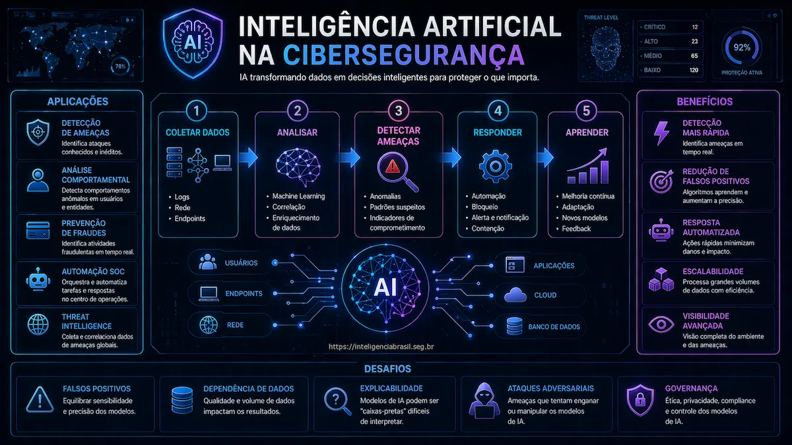

IA para Defesa Cibernetica
Inteligencia Artificial esta revolucionando a seguranca defensiva, permitindo detectar ameacas que seriam impossiveis de identificar manualmente e automatizar respostas em velocidade de maquina.
Deteccao de Anomalias
ML identifica comportamentos anomalos em logs, trafego de rede e endpoints que regras estáticas nao detectariam. Detecta ameacas zero-day, movimentacao lateral e exfiltracao sutil.
Exemplos: User Behavior Analytics (UBA), Network Detection and Response (NDR), deteccao de malware sem assinaturas.
Automacao de Resposta
SOAR com IA prioriza alertas, enriquece com contexto e executa playbooks automaticamente. Reduz MTTR drasticamente.
Beneficios: Triagem automatica de milhares de alertas, reducao de falsos positivos, resposta em segundos vs horas.
Threat Hunting Assistido
IA sugere hipóteses de threat hunting, correlaciona eventos aparentemente nao relacionados e identifica padroes de APTs.
IA em Ataques Ciberneticos
Infelizmente, atacantes tambem estao usando IA para sofisticar suas operacoes:
Phishing Aprimorado
LLMs geram phishing extremamente convincente, personalizado para cada vitima, sem erros gramaticais. Escala ataques de spear phishing que antes exigiam pesquisa manual.
Deepfakes e Fraudes
Audio e video sintéticos para CEO fraud, bypass de autenticacao biométrica, desinformacao. Casos reais de transferencias milionarias autorizadas por "CEOs" falsos em videochamada.
Geracao de Malware
LLMs podem ajudar na criacao de malware, evasao de deteccao e automacao de exploits. Reduzem barreira de entrada para atacantes menos sofisticados.
Riscos de LLMs nas Organizações
Alem de ameacas externas, o uso interno de LLMs traz riscos especificos:
Vazamento de Dados
Funcionarios inserindo codigo proprietario, dados de clientes ou informacoes confidenciais em ChatGPT/Copilot. Dados podem ser usados para treino ou vazados.
Mitigacao: Politica clara de uso, DLP, versoes enterprise com garantias de privacidade.
Prompt Injection
Atacantes manipulam inputs para fazer LLM executar acoes nao pretendidas, vazar dados de contexto ou ignorar restricoes.
Mitigacao: Validacao de inputs, sandboxing, limitar permissoes de acoes automatizadas.
Compliance e Propriedade Intelectual
LLMs podem gerar codigo com licencas problematicas, violar direitos autorais ou produzir outputs que violam regulamentacoes.
Mitigacao: Revisao humana, ferramentas de deteccao de codigo copiado, governanca de IA.
O Futuro da IA em Ciberseguranca
- Agentes autônomos: IA que conduz investigacoes completas e responde a incidentes com minima intervencao humana
- Adversarial ML: Defesa contra ataques que manipulam modelos de ML
- IA vs IA: Corrida armamentista entre IA ofensiva e defensiva
- Regulamentacao: Leis especificas para uso de IA em seguranca e ataques
- Democratizacao: Ferramentas de IA acessíveis tanto para defesa quanto para ataque
Conclusao
A inteligencia artificial esta transformando irreversivelmente o cenario da ciberseguranca. Do lado defensivo, oferece capacidades antes impossiveis: deteccao de ameacas sofisticadas, automacao de respostas em escala e reducao drástica do tempo de contencao. Do lado ofensivo, esta democratizando ataques sofisticados e criando novas categorias de ameacas como deepfakes e phishing hiper-personalizado.
Para organizações, a questao nao e mais "se" adotar IA em seguranca, mas "como" faze-lo de forma responsavel. Isso inclui avaliar solucoes de IA para defesa, estabelecer governanca para uso interno de LLMs, e preparar-se para ameacas potencializadas por IA. A corrida armamentista entre IA ofensiva e defensiva ja comecou - organizações que nao se adaptarem ficarao para tras.
O futuro pertence aqueles que souberem usar IA como multiplicador de forca para suas equipes de seguranca, mantendo o humano no controle das decisoes criticas. Esse movimento se insere em um contexto maior de transformacao tecnologica - veja como a Indústria 4.0 esta redefinindo manufatura, automacao e a propria superficie de ataque das organizacoes.
Quer Implementar IA em Seguranca?
Ajudamos a avaliar e implementar solucoes de IA para deteccao de ameacas e automacao.
Falar com Especialista